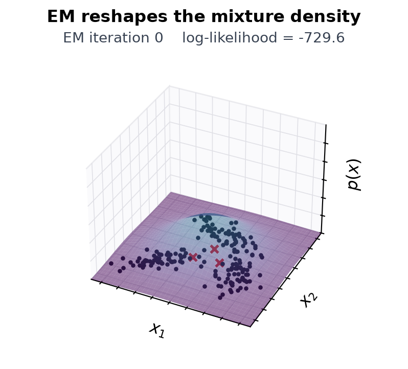
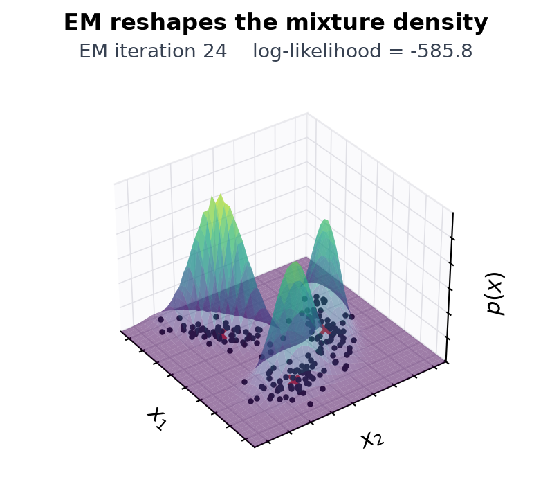
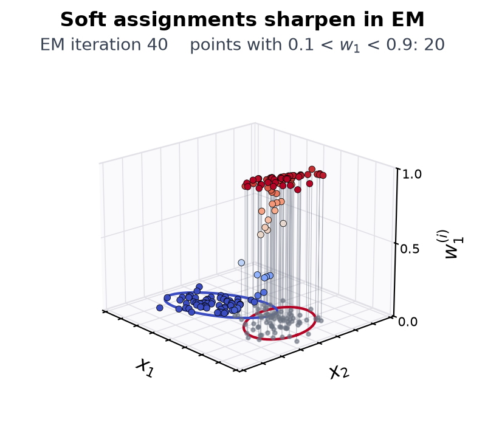
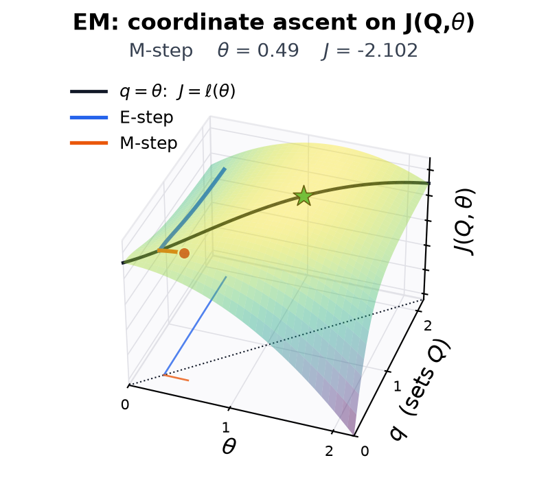
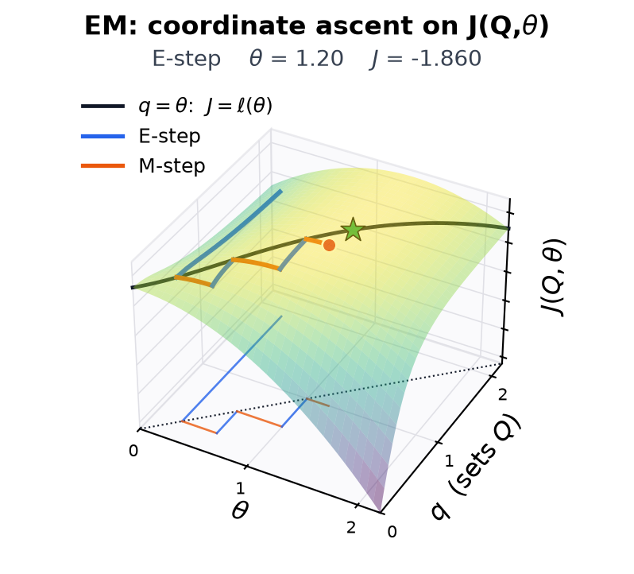
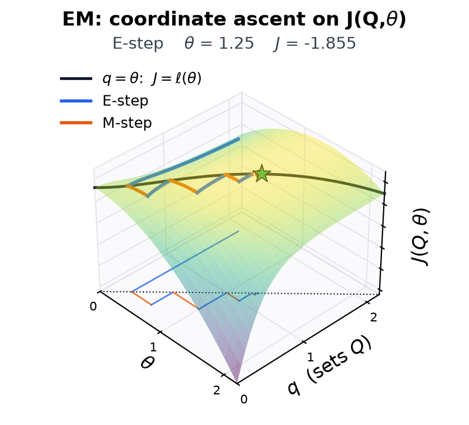
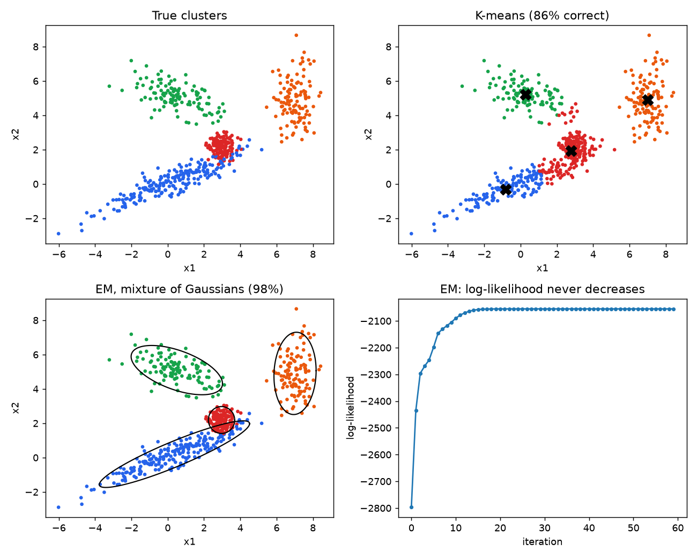

K-means, Mixture of Gaussians और EM Algorithm
Theory
इस lecture में: Unsupervised Learning (बिना labels के सीखना), K-means clustering और उसका distortion function, local optima, Mixture of Gaussians model, उसके लिए EM algorithm (E-step और M-step), Jensen's inequality, और General EM Algorithm: lower bound कैसे बनता है, वह tight कब होता है, और likelihood हर iteration में क्यों बढ़ता है।
1. एक line में idea
अब तक हर example के साथ सही जवाब \(y\) मिलता था। Unsupervised Learning में सिर्फ़ \(x\) मिलते हैं, कोई label नहीं। काम है data में छिपा ढाँचा खुद ढूँढना, जैसे यह कि points कुछ झुंडों (clusters) में बँटे हैं।
K-means सबसे सीधा तरीका है: \(k\) केंद्र (centroids) रखो, हर point को सबसे पास वाले केंद्र का मान लो, फिर हर केंद्र को अपने points के बीच में खिसका दो, और यही दोहराओ। Mixture of Gaussians इसी बात का probabilistic रूप है: हर cluster एक Gaussian है और हर point हर cluster का "थोड़ा-थोड़ा" हो सकता है। इसे fit करने का तरीका EM (Expectation-Maximization) है: पहले अंदाज़ा लगाओ कि कौन सा point किस cluster का है (E-step), फिर उस अंदाज़े को सच मानकर parameters निकालो (M-step)। EM सिर्फ़ clustering के लिए नहीं है। यह हर उस model पर चलता है जिसमें कोई छिपा हुआ (latent) variable हो।
2. Setup और Notation
| Symbol | मतलब |
|---|---|
| \(\{x^{(1)}, \dots, x^{(m)}\}\) | training set, \(x^{(i)} \in \mathbb{R}^n\), कोई \(y^{(i)}\) नहीं |
| \(k\) | clusters की संख्या (हम खुद चुनते हैं) |
| \(\mu_j\) | \(j\)-वें cluster का centroid (या Gaussian का mean) |
| \(c^{(i)}\) | k-means में \(x^{(i)}\) को दिया गया cluster, \(c^{(i)} \in \{1, \dots, k\}\) |
| \(z^{(i)}\) | latent variable: \(x^{(i)}\) असल में किस Gaussian से आया (हमें दिखता नहीं) |
| \(\phi_j\) | \(p(z^{(i)} = j)\), यानी cluster \(j\) का हिस्सा। \(\phi_j \ge 0\), \(\sum_j \phi_j = 1\) |
| \(w_j^{(i)}\) | responsibility: \(p(z^{(i)} = j \mid x^{(i)})\) का हमारा अंदाज़ा |
| \(Q_i\) | \(z^{(i)}\) पर कोई distribution, \(\sum_z Q_i(z) = 1\) |
3. K-means Algorithm
- \(k\) centroids \(\mu_1, \dots, \mu_k \in \mathbb{R}^n\) को randomly initialize करें (आम तरीका: training set से \(k\) random examples उठा लें)।
- Converge होने तक दोहराएँ:
- Assign: हर \(i\) के लिए \(c^{(i)} := \arg\min_j \|x^{(i)} - \mu_j\|^2\), यानी सबसे पास वाला centroid।
- Move: हर \(j\) के लिए centroid को उसके points के mean पर ले जाएँ:
\[\mu_j := \frac{\sum_{i=1}^{m} 1\{c^{(i)} = j\}\, x^{(i)}}{\sum_{i=1}^{m} 1\{c^{(i)} = j\}}\]
जब किसी point का cluster नहीं बदलता, तो centroids भी नहीं बदलते और algorithm रुक जाता है।
4. Distortion Function: k-means क्यों रुकता है
K-means असल में इस distortion function को छोटा कर रहा है:
\[J(c, \mu) = \sum_{i=1}^{m} \left\| x^{(i)} - \mu_{c^{(i)}} \right\|^2\]
यह हर point की अपने centroid से squared दूरी का जोड़ है। K-means इस पर coordinate descent है:
- Assign step \(\mu\) को स्थिर रखकर \(J\) को \(c\) के लिए minimize करता है। हर \(c^{(i)}\) जोड़ के सिर्फ़ एक term में आता है, और सबसे पास वाला centroid चुनना उस term को सबसे छोटा बनाता है।
- Move step \(c\) को स्थिर रखकर \(J\) को \(\mu\) के लिए minimize करता है। Cluster \(j\) के terms का derivative लें: \(\nabla_{\mu_j} \sum_{i: c^{(i)}=j} \|x^{(i)} - \mu_j\|^2 = -2 \sum_{i: c^{(i)}=j} (x^{(i)} - \mu_j)\)। इसे zero रखने पर \(\mu_j\) ठीक उन points का mean निकलता है।
दोनों steps \(J\) को घटाते हैं या वैसा ही रखते हैं, इसलिए \(J\) कभी नहीं बढ़ता। \(J \ge 0\) है और संभव assignments की संख्या सीमित (\(k^m\)) है, इसलिए \(J\) हमेशा घटता नहीं रह सकता: कुछ iterations के बाद कुछ नहीं बदलता और algorithm रुक जाता है।
Local optima और random restarts
\(J\) non-convex है, इसलिए coordinate descent global minimum की guarantee नहीं देता। K-means किसी local optimum में अटक सकता है, जैसे दो centroids एक ही असली cluster को बाँट लें और एक centroid दो clusters के बीच बैठ जाए। कौन सा जवाब मिलेगा, यह initialization पर निर्भर है। इलाज सरल है: k-means को अलग-अलग random initializations से कई बार चलाएँ और वह जवाब रखें जिसका \(J(c, \mu)\) सबसे छोटा हो।
\(k\) कैसे चुनें
\(k\) बढ़ाने पर \(J\) हमेशा घटता है (\(k = m\) पर \(J = 0\)), इसलिए "सबसे छोटा \(J\)" देखकर \(k\) नहीं चुना जा सकता। दो आम तरीके: (1) \(J\) बनाम \(k\) का graph बनाएँ और वह "कोहनी" (elbow) देखें जिसके बाद \(J\) धीरे घटता है। (2) यह देखें कि clusters का आगे क्या काम है (जैसे T-shirt के 3 size चाहिए तो \(k = 3\))। अक्सर \(k\) हाथ से ही चुना जाता है।
5. Mixture of Gaussians
अब data के बनने की एक कहानी मान लेते हैं। हर example के लिए पहले एक छिपा हुआ cluster \(z^{(i)}\) चुना जाता है, फिर उस cluster के Gaussian से \(x^{(i)}\) निकलता है:
\[z^{(i)} \sim \mathrm{Multinomial}(\phi), \qquad x^{(i)} \mid z^{(i)} = j \;\sim\; \mathcal{N}(\mu_j, \Sigma_j)\]
Joint distribution है \(p(x^{(i)}, z^{(i)}) = p(x^{(i)} \mid z^{(i)})\, p(z^{(i)})\)। Parameters हैं \(\phi, \mu, \Sigma\)। \(z^{(i)}\) हमें दिखता नहीं, इसलिए data का log-likelihood \(z\) पर जोड़ लेकर बनता है:
\[\ell(\phi, \mu, \Sigma) = \sum_{i=1}^{m} \log p(x^{(i)}; \phi, \mu, \Sigma) = \sum_{i=1}^{m} \log \sum_{j=1}^{k} p(x^{(i)} \mid z^{(i)} = j; \mu, \Sigma)\, p(z^{(i)} = j; \phi)\]
मुश्किल कहाँ है: \(\log\) के अंदर जोड़ है। Derivatives को zero रखने पर हर parameter की equation में बाकी सारे parameters उलझे रहते हैं, और closed form में हल नहीं निकलता।
अगर \(z^{(i)}\) दिखता होता: तब \(\ell = \sum_i \left[ \log p(x^{(i)} \mid z^{(i)}; \mu, \Sigma) + \log p(z^{(i)}; \phi) \right]\) होता, \(\log\) के अंदर कोई जोड़ नहीं, और maximum सीधे मिल जाता:
\[\phi_j = \frac{1}{m} \sum_{i=1}^{m} 1\{z^{(i)} = j\}, \qquad \mu_j = \frac{\sum_i 1\{z^{(i)} = j\}\, x^{(i)}}{\sum_i 1\{z^{(i)} = j\}}, \qquad \Sigma_j = \frac{\sum_i 1\{z^{(i)} = j\}\, (x^{(i)} - \mu_j)(x^{(i)} - \mu_j)^T}{\sum_i 1\{z^{(i)} = j\}}\]
ये लगभग वही formulas हैं जो Gaussian Discriminant Analysis (GDA) में मिले थे। वहाँ class label \(y\) दिया होता था। यहाँ \(z^{(i)}\) वही भूमिका निभाता है, बस वह छिपा है (और यहाँ हर cluster का अपना \(\Sigma_j\) है)।
6. Mixture of Gaussians के लिए EM
EM इसी उलझन को दो आसान steps में तोड़ देता है। Converge होने तक दोहराएँ:
E-step: मौजूदा parameters से हर point के लिए \(z^{(i)}\) का posterior निकालें। Bayes rule से:
\[w_j^{(i)} := p(z^{(i)} = j \mid x^{(i)}; \phi, \mu, \Sigma) = \frac{p(x^{(i)} \mid z^{(i)} = j; \mu, \Sigma)\; \phi_j}{\sum_{l=1}^{k} p(x^{(i)} \mid z^{(i)} = l; \mu, \Sigma)\; \phi_l}\]
यहाँ \(p(x^{(i)} \mid z^{(i)} = j)\) Gaussian \(\mathcal{N}(\mu_j, \Sigma_j)\) की density है। हर \(i\) के लिए \(\sum_j w_j^{(i)} = 1\)।
M-step: ऊपर वाले "\(z\) दिखता होता" formulas में indicator \(1\{z^{(i)} = j\}\) की जगह \(w_j^{(i)}\) रख दें:
\[\phi_j := \frac{1}{m} \sum_{i=1}^{m} w_j^{(i)}, \qquad \mu_j := \frac{\sum_{i} w_j^{(i)} x^{(i)}}{\sum_{i} w_j^{(i)}}, \qquad \Sigma_j := \frac{\sum_{i} w_j^{(i)} (x^{(i)} - \mu_j)(x^{(i)} - \mu_j)^T}{\sum_{i} w_j^{(i)}}\]
Soft बनाम hard assignment: K-means हर point को पूरा का पूरा एक cluster दे देता है (\(c^{(i)}\), hard)। EM हर point को हर cluster में हिस्सा देता है (\(w_j^{(i)}\), soft)। दो clusters के बीच वाले point का \(w\) जैसे \((0.6, 0.4)\) हो सकता है, और वह दोनों means को उसी अनुपात में खींचता है। अगर सारे \(\Sigma_j = \sigma^2 I\) हों और \(\sigma \to 0\), तो हर \(w_j^{(i)}\) 0 या 1 बन जाता है और EM ठीक k-means बन जाता है। K-means की तरह EM भी local optima में अटक सकता है।
ये M-step formulas बस "अंदाज़े" से नहीं आए। ये नीचे वाले General EM से निकलते हैं।
7. Jensen's Inequality
मान लीजिए \(f\) convex function है (यानी \(f''(x) \ge 0\)) और \(X\) एक random variable है। तब
\[E[f(X)] \ge f(E[X])\]
अगर \(f\) strictly convex है (\(f'' > 0\)), तो बराबरी सिर्फ़ तब होती है जब \(X = E[X]\) हो probability 1 के साथ, यानी \(X\) एक constant हो। Concave function (\(f'' \le 0\)) के लिए inequality उलट जाती है: \(f(E[X]) \ge E[f(X)]\)। हमें इसी रूप की ज़रूरत है, क्योंकि \(\log\) strictly concave है (\(\log'' x = -1/x^2 < 0\)):
\[\log\left(E[X]\right) \ge E\left[\log X\right]\]
चित्र में सोचें: concave curve के दो points को जोड़ने वाली सीधी रेखा (chord) हमेशा curve के नीचे रहती है। \(E[f(X)]\) chord पर है, \(f(E[X])\) curve पर।
8. General EM Algorithm
मान लीजिए model \(p(x, z; \theta)\) है और सिर्फ़ \(x\) दिखता है। हमें यह maximize करना है:
\[\ell(\theta) = \sum_{i=1}^{m} \log p(x^{(i)}; \theta) = \sum_{i=1}^{m} \log \sum_{z^{(i)}} p(x^{(i)}, z^{(i)}; \theta)\]
Lower bound बनाना
हर \(i\) के लिए \(z\) पर कोई भी distribution \(Q_i\) लें। अंदर \(Q_i\) से गुणा और भाग करें, फिर Jensen लगाएँ:
\[\begin{aligned} \ell(\theta) &= \sum_i \log \sum_{z^{(i)}} Q_i(z^{(i)})\, \frac{p(x^{(i)}, z^{(i)}; \theta)}{Q_i(z^{(i)})} \\ &\ge \sum_i \sum_{z^{(i)}} Q_i(z^{(i)}) \log \frac{p(x^{(i)}, z^{(i)}; \theta)}{Q_i(z^{(i)})} \end{aligned}\]
पहली line में अंदर का जोड़ एक expectation है: \(E_{z^{(i)} \sim Q_i}\left[ \frac{p(x^{(i)}, z^{(i)}; \theta)}{Q_i(z^{(i)})} \right]\)। \(\log\) concave है, इसलिए \(\log(E[\cdot]) \ge E[\log(\cdot)]\), और यही दूसरी line है। यह bound हर \(Q_i\) और हर \(\theta\) के लिए सही है। इसमें \(\log\) जोड़ के अंदर चला गया है, इसलिए इसे maximize करना आसान है।
Bound को tight बनाना
Jensen में बराबरी तब होती है जब random variable constant हो। यानी हमें चाहिए कि
\[\frac{p(x^{(i)}, z^{(i)}; \theta)}{Q_i(z^{(i)})} = c \quad (z^{(i)} \text{ पर निर्भर नहीं})\]
इसका मतलब \(Q_i(z^{(i)}) \propto p(x^{(i)}, z^{(i)}; \theta)\)। साथ में \(\sum_z Q_i(z) = 1\) भी चाहिए, इसलिए
\[Q_i(z^{(i)}) = \frac{p(x^{(i)}, z^{(i)}; \theta)}{\sum_{z} p(x^{(i)}, z; \theta)} = \frac{p(x^{(i)}, z^{(i)}; \theta)}{p(x^{(i)}; \theta)} = p(z^{(i)} \mid x^{(i)}; \theta)\]
यानी \(Q_i\) को \(z^{(i)}\) का posterior चुनें, तो मौजूदा \(\theta\) पर lower bound ठीक \(\ell(\theta)\) को छू लेता है।
Algorithm
Converge होने तक दोहराएँ:
- E-step: हर \(i\) के लिए \(Q_i(z^{(i)}) := p(z^{(i)} \mid x^{(i)}; \theta)\)
- M-step: \(\theta := \arg\max_\theta \sum_i \sum_{z^{(i)}} Q_i(z^{(i)}) \log \dfrac{p(x^{(i)}, z^{(i)}; \theta)}{Q_i(z^{(i)})}\)
Mixture of Gaussians पर लगाएँ: वहाँ \(Q_i(z^{(i)} = j) = w_j^{(i)}\) है, इसलिए M-step को यह maximize करना है:
\[\sum_{i=1}^{m} \sum_{j=1}^{k} w_j^{(i)} \left[ \log \mathcal{N}(x^{(i)}; \mu_j, \Sigma_j) + \log \phi_j - \log w_j^{(i)} \right]\]
- \(\mu_l\) के लिए: gradient \(\sum_i w_l^{(i)} \Sigma_l^{-1} (x^{(i)} - \mu_l)\) है। इसे zero रखने पर \(\mu_l = \sum_i w_l^{(i)} x^{(i)} / \sum_i w_l^{(i)}\)।
- \(\phi_j\) के लिए: constraint \(\sum_j \phi_j = 1\) है, इसलिए Lagrangian \(\sum_i \sum_j w_j^{(i)} \log \phi_j + \beta (\sum_j \phi_j - 1)\) बनाएँ। Derivative zero रखने पर \(\phi_j = \sum_i w_j^{(i)} / (-\beta)\), और constraint से \(-\beta = \sum_i \sum_j w_j^{(i)} = m\)।
यही Section 6 के formulas हैं। \(\Sigma_j\) भी इसी तरह निकलता है।
Likelihood हर iteration में क्यों बढ़ता है
मान लीजिए iteration \(t\) के शुरू में parameters \(\theta^{(t)}\) हैं और E-step ने \(Q_i^{(t)}\) चुना। तब
\[\begin{aligned} \ell(\theta^{(t+1)}) &\ge \sum_i \sum_{z^{(i)}} Q_i^{(t)}(z^{(i)}) \log \frac{p(x^{(i)}, z^{(i)}; \theta^{(t+1)})}{Q_i^{(t)}(z^{(i)})} \\ &\ge \sum_i \sum_{z^{(i)}} Q_i^{(t)}(z^{(i)}) \log \frac{p(x^{(i)}, z^{(i)}; \theta^{(t)})}{Q_i^{(t)}(z^{(i)})} \\ &= \ell(\theta^{(t)}) \end{aligned}\]
पहली line: lower bound हर \(Q\) और हर \(\theta\) के लिए सही है। दूसरी line: \(\theta^{(t+1)}\) M-step में इसी expression का maximizer है, इसलिए वह \(\theta^{(t)}\) से बुरा नहीं हो सकता। तीसरी line: \(Q_i^{(t)}\) इस तरह चुना गया था कि \(\theta^{(t)}\) पर bound tight हो। इसलिए \(\ell(\theta^{(t+1)}) \ge \ell(\theta^{(t)})\): EM में likelihood कभी नहीं घटता।
EM भी coordinate ascent है
यह function परिभाषित करें:
\[J(Q, \theta) = \sum_i \sum_{z^{(i)}} Q_i(z^{(i)}) \log \frac{p(x^{(i)}, z^{(i)}; \theta)}{Q_i(z^{(i)})}, \qquad \ell(\theta) \ge J(Q, \theta)\]
E-step \(\theta\) को स्थिर रखकर \(J\) को \(Q\) के लिए maximize करता है (तब \(J = \ell(\theta)\) हो जाता है)। M-step \(Q\) को स्थिर रखकर \(J\) को \(\theta\) के लिए maximize करता है। यह वही ढाँचा है जो k-means में था: वहाँ \(J(c, \mu)\) पर coordinate descent, यहाँ \(J(Q, \theta)\) पर coordinate ascent।
9. Practical बातें और आम गलतियाँ
- Features को scale करें: K-means Euclidean दूरी पर चलता है। जिस feature की संख्याएँ बड़ी होंगी, वही दूरी पर हावी हो जाएगा।
- कई बार चलाएँ: K-means और EM दोनों का जवाब initialization पर निर्भर है। कई random restarts करें और सबसे अच्छा \(J\) (k-means) या सबसे बड़ा \(\ell\) (EM) रखें। EM को k-means के centroids से शुरू करना एक अच्छा तरीका है।
- खाली cluster: अगर किसी centroid को कोई point न मिले तो mean निकल नहीं सकता। उस centroid को किसी random point पर दोबारा रख दें।
- Debugging का सबसे अच्छा औज़ार: हर iteration पर \(J\) (k-means) या \(\ell\) (EM) print करें। \(J\) बढ़े या \(\ell\) घटे, तो code में गलती है।
- Gaussian का सिकुड़ जाना: अगर कोई Gaussian सिर्फ़ एक point पर बैठ जाए तो \(\Sigma_j\) singular हो जाता है और likelihood अनंत की ओर भागता है। \(\Sigma_j\) के diagonal में छोटा सा constant जोड़ें या restart करें।
- Underflow: \(n\) बड़ा हो तो Gaussian density बहुत छोटी संख्या होती है। E-step को \(\log\) में करें (log-sum-exp trick)।
- K-means की सीमा: वह गोल और बराबर size के clusters मानकर चलता है। लंबे, तिरछे या अलग-अलग size के clusters के लिए Mixture of Gaussians बेहतर है।
10. खुद से पूछें
- K-means का move step centroid को mean पर ही क्यों ले जाता है, median या किसी और point पर क्यों नहीं? (संकेत: \(J\) में squared दूरी है।)
- EM के E-step के ठीक बाद \(J(Q, \theta)\) और \(\ell(\theta)\) में क्या संबंध है? और M-step के ठीक बाद?
- अगर Mixture of Gaussians में सारे \(\phi_j\) बराबर हों, सारे \(\Sigma_j = \sigma^2 I\) हों और \(\sigma\) बहुत छोटा हो, तो \(w_j^{(i)}\) कैसे दिखेंगे और EM किस algorithm जैसा बन जाएगा?
3D Animations


क्या देखें: तीन axes तीन features \(x_1, x_2, x_3\) हैं और हर बिंदु एक unlabeled example है। बड़े तारे centroids \(\mu_j\) हैं, जो शुरू में तीनों एक ही cluster के अंदर हैं। हर iteration में दो काम बारी-बारी से होते हैं: पहले हर बिंदु अपने सबसे पास वाले centroid का रंग ले लेता है (assign), फिर हर centroid अपने रंग के बिंदुओं के mean पर खिसक जाता है (move)। पतली रेखाएँ बिंदु से उसके centroid तक की दूरी हैं, जिनके squares का जोड़ distortion \(J\) है। देखिए कि \(J\) हर step में घटता है और जब कोई बिंदु रंग नहीं बदलता तो algorithm रुक जाता है।


क्या देखें: फ़र्श पर 2D data (\(x_1, x_2\)) के चार साफ़ clusters हैं और तारे centroids हैं। हर बिंदु के ऊपर खड़ी डंडी की ऊँचाई उसकी अपने centroid से squared दूरी \(\|x^{(i)} - \mu_{c^{(i)}}\|^2\) है, यानी सारी डंडियों का जोड़ ही distortion \(J\) है। पहले run में initialization खराब है: दो centroids एक ही cluster को बाँट लेते हैं और एक centroid को दो clusters सँभालने पड़ते हैं, इसलिए वहाँ डंडियाँ ऊँची रह जाती हैं और k-means वहीं अटक जाता है (local optimum)। दूसरे run में अच्छे initialization से हर cluster को अपना centroid मिलता है और \(J\) बहुत छोटा हो जाता है। इसीलिए k-means कई बार चलाकर सबसे छोटे \(J\) वाला जवाब रखते हैं।



क्या देखें: फ़र्श पर 2D data है और ऊँचाई mixture of Gaussians की density \(p(x) = \sum_j \phi_j\, \mathcal{N}(x; \mu_j, \Sigma_j)\) है। लाल निशान तीनों means \(\mu_j\) हैं। शुरू में तीनों Gaussians चौड़े हैं और लगभग एक ही जगह हैं, इसलिए surface एक ही चपटा टीला है। हर EM iteration में E-step तय करता है कि कौन सा बिंदु किस Gaussian का कितना है, और M-step उन्हीं weights से \(\phi_j, \mu_j, \Sigma_j\) दोबारा निकालता है। टीला धीरे-धीरे तीन चोटियों में बँट जाता है, हर चोटी अपने cluster के आकार में ढल जाती है, और log-likelihood हर iteration में बढ़ता है।



क्या देखें: फ़र्श पर दो overlap करते clusters का 2D data है। हर बिंदु की ऊँचाई उसकी responsibility \(w_1^{(i)} = p(z^{(i)} = 1 \mid x^{(i)})\) है, यानी EM के हिसाब से वह कितना पहले Gaussian का है (ऊँचाई 1 मतलब पूरी तरह पहले का, 0 मतलब पूरी तरह दूसरे का)। फ़र्श पर दोनों Gaussians के ellipses बने हैं। शुरू में दोनों Gaussians लगभग एक जैसे हैं, इसलिए सारे बिंदु \(0.5\) के आस-पास तैर रहे हैं। जैसे-जैसे EM चलता है, ज़्यादातर बिंदु 1 या 0 की ओर चले जाते हैं, पर बीच के overlap वाले बिंदु बीच की ऊँचाई पर ही रहते हैं। यही soft assignment है। K-means में हर बिंदु सीधे 0 या 1 पर होता (hard assignment)।



क्या देखें: यहाँ एक छोटा model है: \(x \sim \frac{1}{2}\mathcal{N}(-\theta, 1) + \frac{1}{2}\mathcal{N}(\theta, 1)\), जिसमें सिर्फ़ एक parameter \(\theta\) है। एक axis पर \(\theta\) है, दूसरे पर \(q\) जो distribution \(Q\) को तय करता है (\(Q_i(z) = p(z \mid x^{(i)}; q)\)), और ऊँचाई lower bound \(J(Q, \theta)\) है। काली रेखा वह जगह है जहाँ \(q = \theta\), यानी जहाँ bound tight है और \(J = \ell(\theta)\)। नीले कदम E-step हैं: \(\theta\) स्थिर, \(Q\) बदलकर काली रेखा तक चढ़ना। नारंगी कदम M-step हैं: \(Q\) स्थिर, \(\theta\) बदलकर उस दिशा की चोटी तक जाना। दोनों कदम \(J\) को बढ़ाते हैं, इसलिए सीढ़ी \(\ell\) के maximum (हरा तारा) तक चढ़ती है और कभी नीचे नहीं उतरती।


क्या देखें: Surface एक concave function है: \(f(x) = \log x_1 + \log x_2\)। Random variable \(X\) तीन बिंदुओं (फ़र्श पर त्रिकोण के कोने) में से कोई एक बराबर probability से लेता है। नारंगी त्रिकोण surface के उन्हीं तीन बिंदुओं को जोड़ने वाला chord है, और उसका बीच का बिंदु \(E[f(X)]\) है। उसके ठीक ऊपर surface पर हरा बिंदु \(f(E[X])\) है। Concave function में chord हमेशा surface के नीचे रहता है, इसलिए \(f(E[X]) \ge E[f(X)]\), और लाल डंडी यही gap है। जैसे-जैसे \(X\) का distribution सिकुड़कर एक ही बिंदु पर आता है (variance 0), gap बंद हो जाता है। EM इसी बात से bound को tight बनाता है।
Python Example
इसे खुद चलाएँ: cs229_hindi/.venv/bin/python cs229_hindi/chapters/L13_kmeans_gmm_em/example.py
"""Lecture 13 example: K-means और Mixture of Gaussians का EM, दोनों शुरू से (सिर्फ़ NumPy). चार 2D blobs जिनके covariance अलग-अलग हैं (एक लंबा-पतला, एक छोटा-गोल, दो फैले हुए)। Labels हम algorithm को नहीं दिखाते, सिर्फ़ अंत में जाँच के लिए इस्तेमाल करते हैं। दिखाते हैं: (a) k-means में distortion J कभी नहीं बढ़ता, (b) अलग initialization पर अलग J, (c) EM में log-likelihood कभी नहीं घटता, (d) EM की soft assignments k-means से बेहतर clusters देती हैं। """ from itertools import permutations import numpy as np import matplotlib.pyplot as plt rng = np.random.default_rng(13) # ---------- 1. Data: mixture of 4 Gaussians से sample करें ---------- k = 4 true_phi = np.array([0.35, 0.25, 0.20, 0.20]) true_mu = np.array([[0.0, 0.0], [3.0, 2.2], [0.5, 5.0], [7.0, 5.0]]) true_Sigma = np.array([[[4.0, 1.7], [1.7, 0.9]], # लंबा-पतला, तिरछा [[0.15, 0.0], [0.0, 0.15]], # छोटा और गोल [[1.6, -0.5], [-0.5, 0.6]], # फैला हुआ [[0.5, 0.0], [0.0, 1.2]]]) # खड़ा ellipse, बाकियों से दूर m = 600 z_true = rng.choice(k, size=m, p=true_phi) # latent z^(i), जो असल में छिपा रहता है X = np.array([rng.multivariate_normal(true_mu[j], true_Sigma[j]) for j in z_true]) # ---------- 2. K-means ---------- def kmeans(X, init_mu): """Returns (c, mu, history). history में हर आधे step के बाद का distortion J है।""" mu, c, history = init_mu.copy(), None, [] while True: dist2 = ((X[:, None, :] - mu[None, :, :]) ** 2).sum(axis=2) # (m, k) new_c = dist2.argmin(axis=1) # step (i): सबसे पास वाला centroid if c is not None and np.all(new_c == c): return c, mu, history # कुछ नहीं बदला: converge c = new_c history.append(dist2[np.arange(len(X)), c].sum()) # assign के बाद J mu = np.array([X[c == j].mean(axis=0) if np.any(c == j) else mu[j] for j in range(len(mu))]) history.append(((X - mu[c]) ** 2).sum()) # step (ii): centroid को mean पर ले जाने के बाद J # ---------- 3. EM for Mixture of Gaussians ---------- def log_gaussian(X, mu, Sigma): """हर row x के लिए log N(x; mu, Sigma).""" d = X - mu maha = np.einsum("ij,ij->i", d @ np.linalg.inv(Sigma), d) return -0.5 * (maha + np.log(np.linalg.det(Sigma)) + X.shape[1] * np.log(2 * np.pi)) def em_mixture(X, init_mu, iters=60): m, n = X.shape k = len(init_mu) phi, mu = np.full(k, 1.0 / k), init_mu.copy() Sigma = np.array([np.cov(X.T) for _ in range(k)]) # शुरुआत: सबका Sigma = पूरे data का covariance history = [] for _ in range(iters): # E-step: w[i, j] = p(z = j | x_i), Bayes rule से (log में, ताकि underflow न हो) log_joint = np.log(phi) + np.column_stack([log_gaussian(X, mu[j], Sigma[j]) for j in range(k)]) top = log_joint.max(axis=1, keepdims=True) log_px = top + np.log(np.exp(log_joint - top).sum(axis=1, keepdims=True)) # log p(x_i) w = np.exp(log_joint - log_px) history.append(log_px.sum()) # मौजूदा parameters पर log-likelihood # M-step: weighted counts, weighted means, weighted covariances Nj = w.sum(axis=0) phi = Nj / m mu = (w.T @ X) / Nj[:, None] for j in range(k): d = X - mu[j] Sigma[j] = (w[:, j, None] * d).T @ d / Nj[j] return w, phi, mu, Sigma, history def relabel(c): """Cluster के नाम मनमाने हैं, इसलिए वह permutation चुनें जो true z से सबसे ज़्यादा मिले।""" best = max(permutations(range(k)), key=lambda p: np.mean(np.array(p)[c] == z_true)) return np.array(best)[c] def accuracy(c): return np.mean(relabel(c) == z_true) # ---------- 4. K-means को 8 अलग random initializations से चलाएँ ---------- runs = [kmeans(X, X[np.random.default_rng(seed).choice(m, k, replace=False)]) for seed in range(8)] print("K-means, 8 random restarts (final distortion J):") print(" " + " ".join(f"{h[-1]:7.1f}" for _, _, h in runs)) c_km, mu_km, hist_km = min(runs, key=lambda r: r[2][-1]) # सबसे छोटा J वाला run रखें _, _, hist_bad = max(runs, key=lambda r: r[2][-1]) print(f" सबसे अच्छा J = {hist_km[-1]:.1f}, सबसे खराब J = {hist_bad[-1]:.1f} (local optimum)") print("\nसबसे अच्छे run में J, हर आधे step के बाद (assign, move, assign, ...):") print(" " + " ".join(f"{j:.1f}" for j in hist_km[:10])) print(f" J कभी बढ़ा? {'हाँ' if np.any(np.diff(hist_km) > 1e-9) else 'नहीं'}") # ---------- 5. EM चलाएँ, k-means के centroids से शुरू करके ---------- w, phi, mu, Sigma, hist_em = em_mixture(X, mu_km) c_em = w.argmax(axis=1) print("\nEM: iteration और log-likelihood") for it in (0, 1, 2, 3, 5, 10, 20, 40, 59): print(f" {it:3d} {hist_em[it]:10.3f}") print(f" log-likelihood कभी घटा? {'हाँ' if np.any(np.diff(hist_em) < -1e-9) else 'नहीं'}") # ---------- 6. नतीजों की तुलना ---------- order = [int(np.argmin(((mu - t) ** 2).sum(axis=1))) for t in true_mu] # EM cluster <-> true cluster print("\ncluster true phi EM phi true mu EM mu") for t, j in enumerate(order): print(f" {t} {true_phi[t]:.2f} {phi[j]:.3f} ({true_mu[t, 0]:4.1f}, {true_mu[t, 1]:4.1f})" f" ({mu[j, 0]:5.2f}, {mu[j, 1]:5.2f})") print(f"\nसही cluster में गए points: K-means {100 * accuracy(c_km):.1f}%, EM {100 * accuracy(c_em):.1f}%") unsure = np.sum(w.max(axis=1) < 0.9) print(f"EM की soft assignment: {unsure} points ऐसे हैं जिनका सबसे बड़ा w भी 0.9 से कम है (overlap वाले)") # ---------- 7. Plots ---------- fig, axes = plt.subplots(2, 2, figsize=(10, 8)) axes = axes.ravel() colors = np.array(["#2563eb", "#dc2626", "#16a34a", "#ea580c"]) for ax, labels, title in [(axes[0], z_true, "True clusters"), (axes[1], c_km, f"K-means ({100 * accuracy(c_km):.0f}% correct)"), (axes[2], c_em, f"EM, mixture of Gaussians ({100 * accuracy(c_em):.0f}%)")]: ax.scatter(X[:, 0], X[:, 1], c=colors[relabel(labels)], s=7) ax.set(title=title, xlabel="x1", ylabel="x2") axes[1].scatter(mu_km[:, 0], mu_km[:, 1], marker="X", s=120, c="black") angle = np.linspace(0, 2 * np.pi, 100) circle = np.c_[np.cos(angle), np.sin(angle)] for j in range(k): # हर Gaussian का 2-sigma ellipse ellipse = mu[j] + 2 * circle @ np.linalg.cholesky(Sigma[j]).T axes[2].plot(ellipse[:, 0], ellipse[:, 1], "k-", lw=1.2) axes[3].plot(hist_em, "o-", ms=3) axes[3].set(title="EM: log-likelihood never decreases", xlabel="iteration", ylabel="log-likelihood") fig.tight_layout() fig.savefig("result.png", dpi=130)
K-means, 8 random restarts (final distortion J):
1010.5 1010.6 2163.1 2163.1 1010.9 1010.6 1010.9 1010.6
सबसे अच्छा J = 1010.5, सबसे खराब J = 2163.1 (local optimum)
सबसे अच्छे run में J, हर आधे step के बाद (assign, move, assign, ...):
3777.5 2578.2 1907.6 1114.6 1020.7 1010.5
J कभी बढ़ा? नहीं
EM: iteration और log-likelihood
0 -2797.055
1 -2435.648
2 -2295.910
3 -2268.872
5 -2198.195
10 -2089.915
20 -2055.026
40 -2054.942
59 -2054.942
log-likelihood कभी घटा? नहीं
cluster true phi EM phi true mu EM mu
0 0.35 0.364 ( 0.0, 0.0) ( 0.37, 0.20)
1 0.25 0.250 ( 3.0, 2.2) ( 2.97, 2.19)
2 0.20 0.200 ( 0.5, 5.0) ( 0.50, 5.10)
3 0.20 0.185 ( 7.0, 5.0) ( 7.02, 4.91)
सही cluster में गए points: K-means 86.2%, EM 98.3%
EM की soft assignment: 55 points ऐसे हैं जिनका सबसे बड़ा w भी 0.9 से कम है (overlap वाले)
